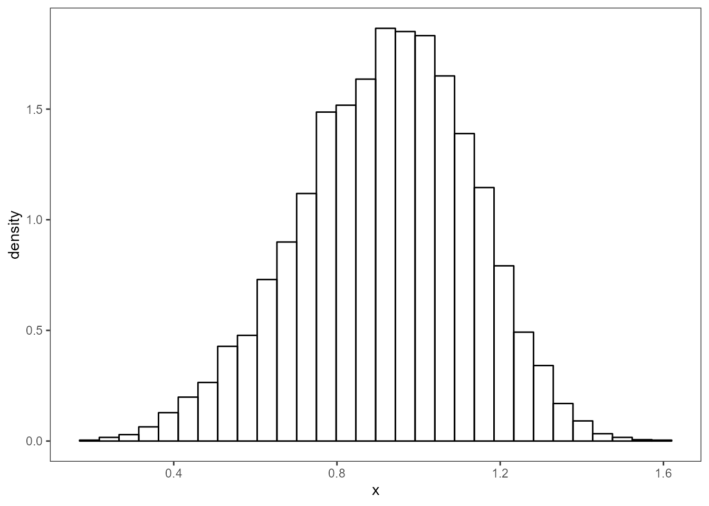
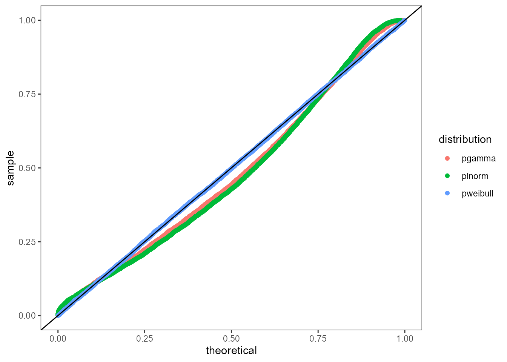

Diagnostic Plots for Fitting Distributions
Thomas Roh
December 17, 2017
Source:vignettes/diagnostic_plots.Rmd
diagnostic_plots.RmdThe fitur package includes several tools for visually
inspecting how good of a fit a distribution is. To start, fictional
empirical data is generated below. Typically this would come from a
real-world dataset such as the time it takes to serve a
customer at a bank, the length of stay in an emergency department, or
customer arrivals to a queue.
Histogram
Below is a histogram showing the shape of the distribution and the y-axis has been set to show the probability density.
dt <- data.frame(x)
nbins <- 30
g <- ggplot(dt, aes(x)) +
geom_histogram(aes(y = ..density..),
bins = nbins, fill = NA, color = "black") +
theme_bw() +
theme(panel.grid = element_blank())
g
Histogram vs Density Plot
Three distributions have been chosen below to test against the
dataset. Using the fit_univariate function, each of the
distributions are fit to a fitted object. The first item in
each of the fits is the probabilty density function. Each
fit is overplotted onto the histogram to see which distribution
fits best.
dists <- c('gamma', 'lnorm', 'weibull')
multipleFits <- lapply(dists, fit_univariate, x = x)
plot_density(x, multipleFits, 30) + theme_bw() +
theme(panel.grid = element_blank())Q-Q Plot
The next plot used is the quantile-quantile plot. The
plot_qq function takes a numeric vector x of the
empirical data and sorts them. A range of probabilities are computed and
then used to compute comparable quantiles using the q
distribution function from the fitted objects. A good fit would
closely align with the abline y = 0 + 1*x. Note: the q-q plot tends to
be more sensitive around the “tails” of the distributions.
plot_qq(x, multipleFits) +
theme_bw() +
theme(panel.grid = element_blank())
P-P Plot
The Percentile-Percentile plot rescales the input data to the
interval (0, 1] and then calculates the theoretical percentiles to
compare. The plot_pp function takes the same inputs as the
Q-Q Plot but it performs on rescaling of x and then computes the
percentiles using the p distribution of the fitted
object. A good fit matches the abline y = 0 + 1*x. Note: The P-P plot
tends to be more sensitive in the middle of the distribution.
plot_pp(x, multipleFits) +
theme_bw() +
theme(panel.grid = element_blank())